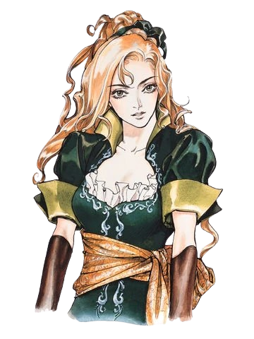

Castlevânia Symphony of the Night
Peronagens jogáveis
ALUCARD (João Tepes)
- Filho do drácula
- Consegue usar magias de seu pai, incluindo a icônica bola de fogo de Drácula
- O personagem princial deste título
- Vira um cachorro com fome e um morgeco cansado
- Consegue equipar pets (não vire morgeco perto do pet morgeco)
RICHTER BELMOND
- Derrtou o drácula no jogo anterior
- Usa apenas o chicote estrela da manhã da família Belmond
- Desbloqueável por códigos (digitar RICHTER como nome do personagem)
- Seus consumíveis possuem ultmates(somente na versão playstation)
- Suas skills conseguem ser feitas em conjunto para aumentar muito sua velocidade de movimento
MARIA RENARD

- Aparece algumas poucas vezes durante a gameplay
- Usa magia de invocações
- Seus consumíveis viram a habilidade de invocar
- Desbloqueável por código, apenas na versão playstation 4 em diante (digitar MARIA como nome do personagem)
- A mais divertida de jogar